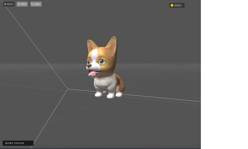
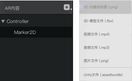

概述
Authoring Tools是一个在线的AR内容制作工具，是洞见AR内容热更新框架中的一个重要组成部分。AT基于unity3D开发，提供方便的可交互3D内容编辑功能，能够在网页上实时预览洞见客户端及insightSDK上的3D内容效果，并且实时发布更新至洞见客户端及SDK
本文档适用于使用Maya，3Dmax等3D制作软件开发3D内容，并导出到Authoring Tools编辑的用户
Authoring Tools包含以下功能模块（v 1.3.0）：
算法：
- AR算法配置
- 图片识别
- 平面识别
- 三维物体识别
AR内容：
- 模型动画编辑
- 支持多FBX上传
- 材质编辑
- 预置常用shader库
- 支持上传自定义shader(from unity)
- 3D内容预览
- 多媒体资源
- 视频、音频、图片
- 光照环境
模版：
- AR内容模版
- 将3D资源快速AR化
- 动画状态机
- 动画过渡
- 提供默认模版
交互：
- GUI
- 洞见AR交互框架
- 自定义UI组件
- AR Script脚本
快速发布：
- 热更新至洞见客户端
即将上线的功能模块：
- 可视化编程
- 动画音效编辑
- 人脸AR模版
- 三维物体AR模版
进入AT
创建AR内容后，在内容详情页面点击“可视化编辑”按钮，即可进入Authoring Tools编辑工具。
工具面板
Authoring Tools由一些模块化的工具面板组成。以下将介绍各模块功能
场景

在场景面板中，可以预览AR内容的效果。并且可以对模型进行移动、旋转以及缩放的操作。
AR内容

AR内容面板以树状结构管理着在场景中的所有物体。点击右侧的添加按钮，可以从本地上传多种类型文件。
参数编辑器

在参数面板中调节参数、编辑材质、添加脚本等。参数面板有以下几类控件组成：变换、模型动画预览、材质编辑、脚本等等。每个不同类型物件的参数编辑器有不同的控件组合而成。
顶部工具栏

顶部工具栏有四个功能按钮。更换模版可以在切换别的模版的
预览窗口
预览界面可以预览手机端的效果。点击顶部工具栏的运行按钮，可以在预览窗口中预览脚本运行的效果。并用鼠标点模拟点击手机屏幕效果。